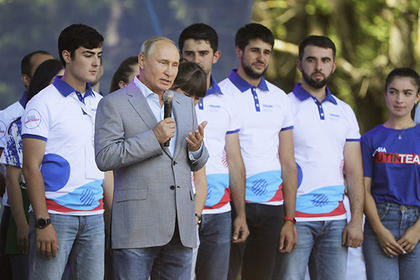

Президент Владимир Путин считает, что в социальных сетях не хватает
Руководитель проекта «Студенческий медиахолдинг» Висраил Хадиев рассказал
«Особенно здорово, что вы в сетях работаете. Потому что, я так понимаю,
7 июня Владимир Путин заявил, что «никто не собирается закрывать»
Больше важных новостей в Telegram-канале «Лента дня». Подписывайся!
Ссылки по теме
Путин призвал пресечь вбросы через соцсети
Мероприятия штаба Путина задумали транслировать в соцсетях
Путин в «царском мундире» и c головой Трампа возбудил соцсети
позитивного контента. Соответствующим наблюдением он поделился во время
общения с участниками образовательного форума «Машук» в среду, 15 августа,
передает РИА Новости.
Путину о том, как создается контент для студенческих телестудий. Он отметил,
что преимущественно он распространяется в социальных сетях.
настрой у вас самый позитивный. А позитив в сетях нужен 100 процентов,
которого часто не хватает», — отреагировал глава государства.
социальные сети в России. Так глава государства отреагировал на обращение
популярных блогеров, которые попросили его прокомментировать слухи о
закрытии Instagram и YouTube. Он также признал необходимость использовать
современные средства борьбы с террористами, не ограничивая пространство
свободы, в том числе в интернете.